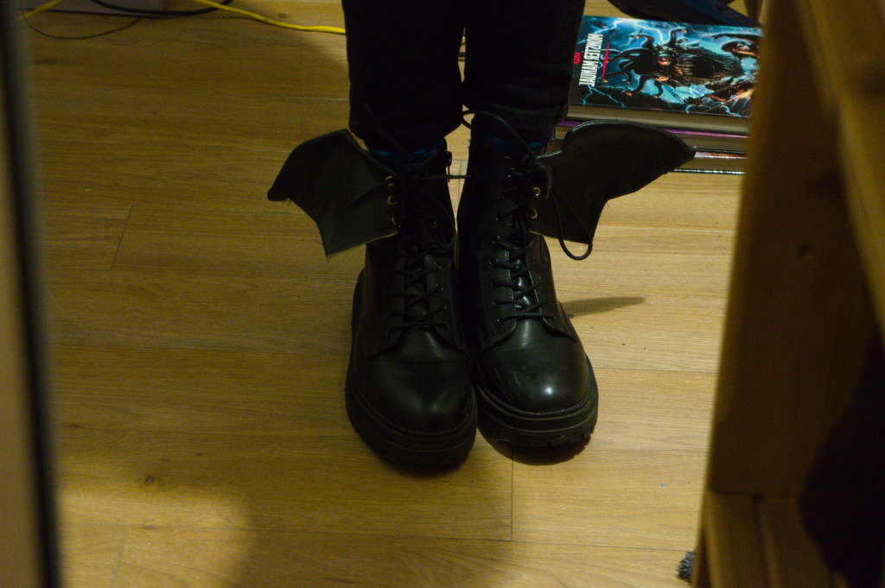
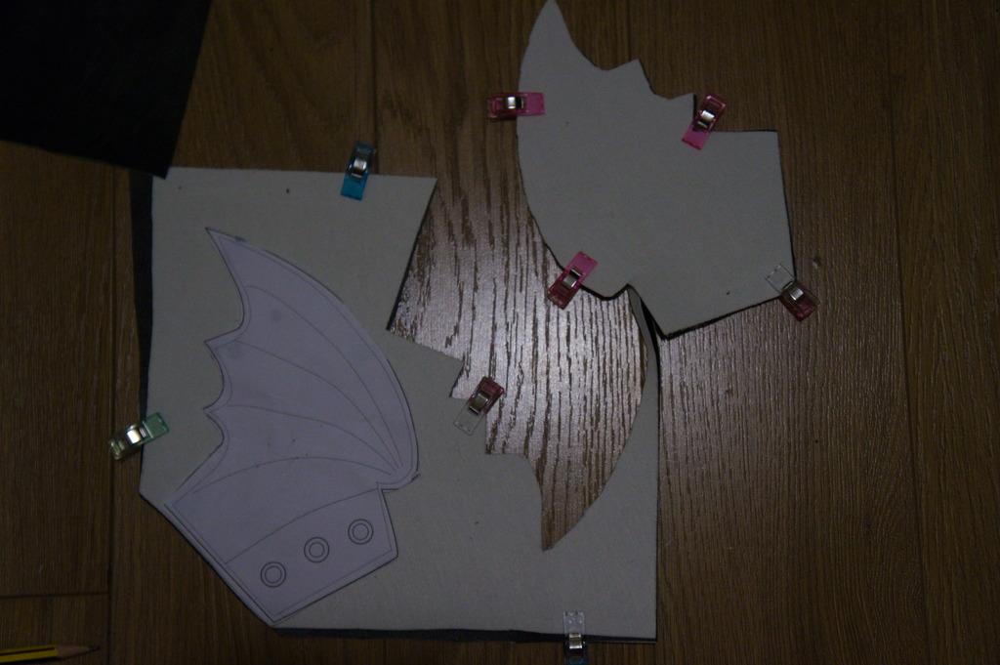
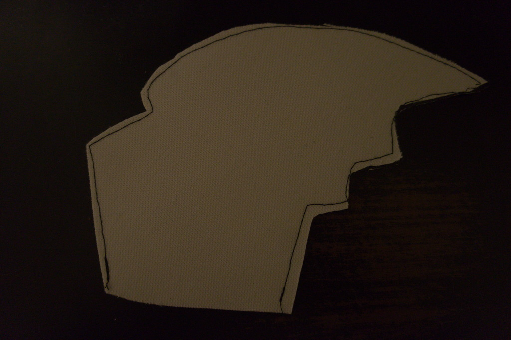
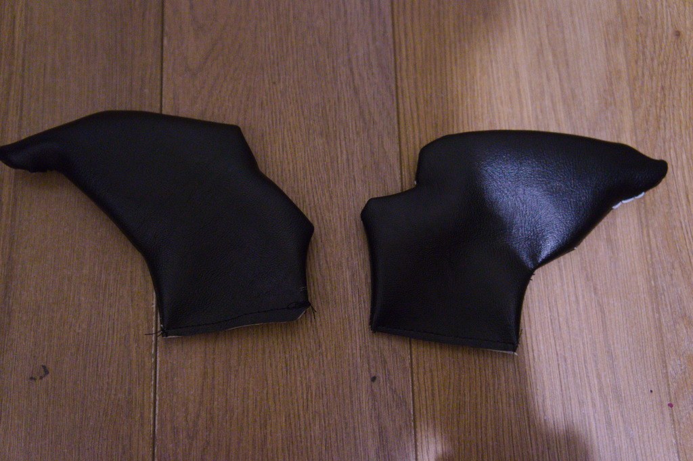
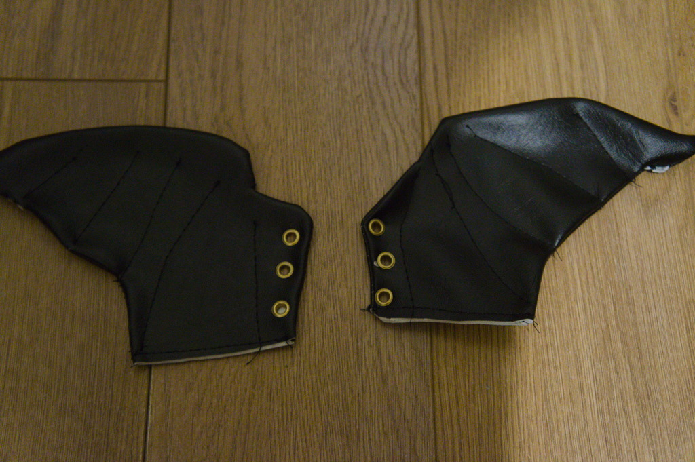

It's sewing, innit? Adding Bat Wings to my Boots!

I've decided that in 2022 I want to learn to sew better, using the sewing machine I got towards the end of 2021. Since I started at my current college I've had a friend who's look I am not even subtle about the fact I'm trying to steal, and she has some awesome boots that have bat wings on them. They came from a brand called Koi Footwear, who are wayyy out of my price range. So I decided to make my own!
This was my second real sewing project and one that was probably more difficult than I thought it would be, but I learned a bunch of stuff. Initially I was gonna make this a tutorial but instead I'll just write a post about how I made it, and you can use that as a tutorial if you want. But you probably shouldn't - the fact my needle gets unthreaded as soon as I finish a single line of stitching should tell you how competent I am as a sewer.
First, I drew up a pattern in inkscape based on some images from koi's site.
{kind=link}
Then I printed this pattern and cut it out of a sheet of vinyl faux leather. I cut the fabric two layers at a time with right sides together to ensure I had two very similar pieces for each side when I was sewing. This was a little bit wasteful of fabric but made sewing a LOT easier. I didn't have any pattern weights and my weak pins wouldn't go through the vinyl without bending, so I used blue tack to hold the pattern in place.

Once these were cut, keeping the right sides together, I sewed around the edge of the pieces using a leather needle and walking foot (two things I would NEVER try sewing vinyl without), leaving the long straight side open. I discovered that I'd missed some spots here and I had to re-sew them, which lead to some problems in the results, but nothing super major.

Then I turned them inside out (something that vinyl hates doing, I enlisted a wooden spoon and pencil as makeshift tools to help me turn it out) and sewed across the open seam.

I then "pressed" the pieces (under a pile of D&D books, as I don't have the proper tools for that) and sewed some decorative extra lines (roughly following the pattern, but it was largely freehand) and punched through no-sew eyelets to allow me to lace them into my boots. The lines start a bit out from the edge of the fabric as my sewing machine couldn't sew through the bulky seams. Punching the eyelet holes was fun but I didn't get them exactly lined up.

When this was done, I attached them to my boots, and there it is! The winged boots in the first picture.
Overall I'm happy with this project. I should have known earlier about the problems that sewing vinyl can have, and be more careful to actually catch both pieces of something together when sewing them. But I'm very happy with them for a second ever sewing project!